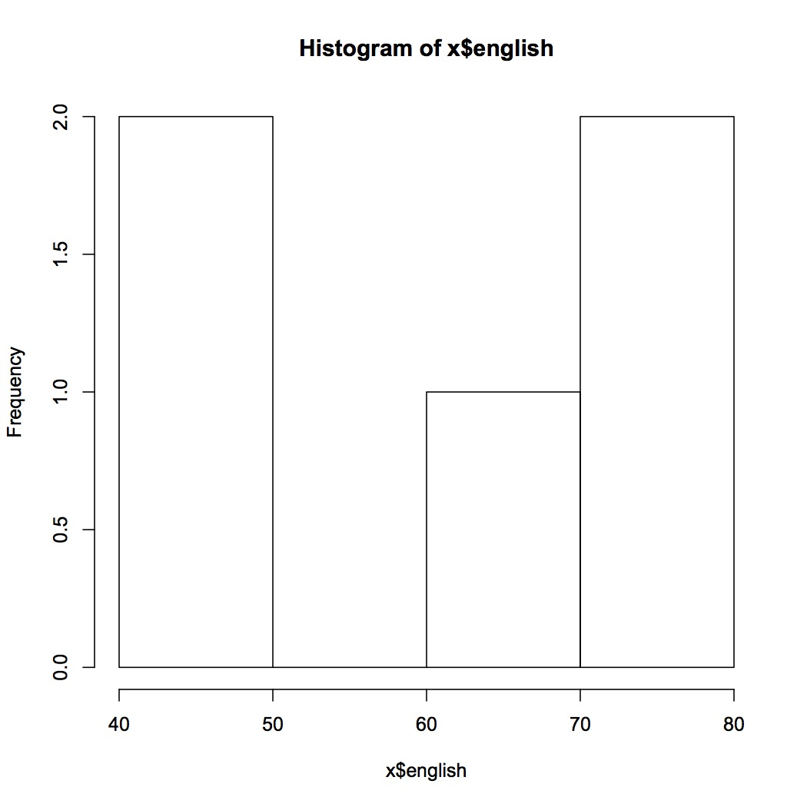

統計に特化した言語
pythonもデータ分析に用いられているけど…
初心者だからR言語にしたよ！
https://www.rstudio.com/products/rstudio/download2/
R StudioはR言語に特化したIDEだよ！
ぼくはHomebrewでいれましたけども…
Rで使うデータをオブジェクトと呼びます
hoge <- 10
みたいな感じです
複数の数字を1つにまとめたもので、ぼくは配列と同じ感じと理解しています
x <- c(10, 14, 23)
目的別にいっぱあい用意されている
例えばCSVファイルを読み込む
read.csv("ファイル名")
これでcsvファイルにあるデータをRで加工することが可能になったりします
read.csv("file_name")
これでCSVファイルを読み込みます。
x = read.csv("./classData.csv")
日本語を使ったCSVファイルだと正しく読み込めないことがあります。
その場合、第二引数にfileEncoding = "cp932"を指定すればおｋれす
x = read.csv("./classData.csv", fileEncoding = "co932")
オブジェクト名$列名
さっき読み込んだCSVからenglishの列を抜き出すのは…
x$english
mean関数
mean(x$english)
median関数
median(x$english)
そこがノンプログラマーにはとっつきやすいのかも
csvファイルの各列を指定して平均出すの面倒…
そこで…colMeans関数
colMeans(x[, -c(1, 2)])
ちょっと複雑になりましたね
分解してみます
引数でオブジェクトを指定
[]でオブジェクトの列、行の位置を指定
[, -c(1, 2)]前半が行、後半が列
行を空にする事ですべてという意味に
-c(1, 2)で列の1, 2行目を除外としている
x <- read.csv("data01.csv")
xを実行するとデータが羅列するはず
mean(x$english)
62が返ってくるはず
median(x$english)
68が返ってくるはず
colMeans(x[, -c(1, 2)])
いろいろ返ってくるはず
sd()
分散の平方根をもとめる
hist(x$english)

sqrt(var(x$english))
ディレクター連載のGAをスプレッドシートに書きだして
CSVファイルにして
Rで読み込む